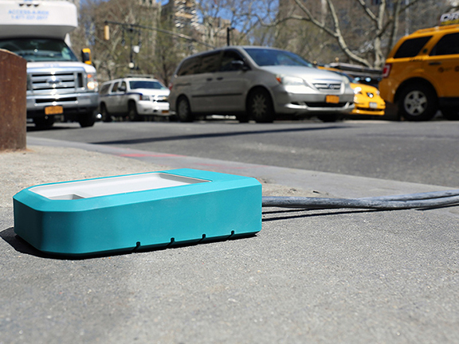
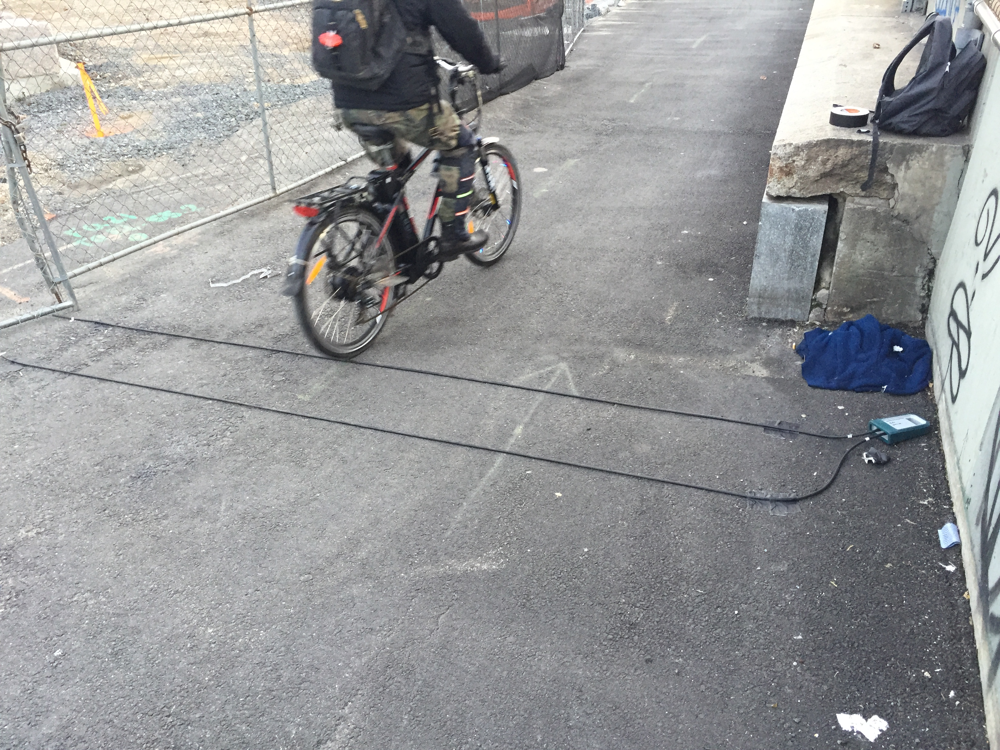

WayCount is a Tomorrow Lab-developed platform for collecting and sharing accurate automobile traffic count data. One of my projects at Tomorrow Lab was to gage the WayCount device's feasibility for counting bicycle traffic in addition to cars. Initially, my work consisted of testing the WayCount's electrical response to both a simulator and real bike traffic. When I discovered that the WayCount’s hardware wasn’t sensitive enough to detect most bikes, I made minor tweaks to its circuitry to improve detection and speed measurement without compromising its excellent battery life.

After verifying on the oscilloscope that bicycle wheels were being properly detected when driving by the WayCount, I collected more data from outdoor testing and looked at how well the WayCount’s algorithms were interpreting the raw data as passing bicycles. I also collected and closely analyzed data from cars to pinpoint errors in speed measurement or vehicle classification that helped to inform firmware revisioning.